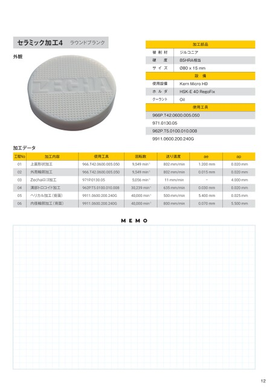

p.12加工事例（まとめ）

セラミック加工4ラウンドブランク
加工部品
外観 被削材 ジルコニア 被削材 ジルコニア
硬度 85HRA相当
サイズ Ø80x15mm
設備
使用設備 KernMicroHD
ホルダ HSK-E40RegoFix
クーラント Oil
使用工具
966P.T42.0600.005.050
971.0130.05
962P.T5.0100.010.008
9911.0600.200.240G
加工データ
工程No使用工具加工内容 回転数 使用工具送り速度 回転数 ae 送り速度 ap ae ap
966.T42.0600.005.050 01 上面形状加工 9,549min-1966.T42.0600.005.050 802mm/min 9,549min-1 1.200mm 802mm/min 0.020mm 1.200mm 0.020mm
966.T42.0600.005.050 02 外周輪郭加工 9,549min-1966.T42.0600.005.050 802mm/min 9,549min-1 0.015mm 802mm/min 0.020mm 0.015mm 0.020mm
971P.0130.05Zechaロゴ加工 03 5,056min-1971P.0130.0511mm/min 5,056min-1 ー 11mm/min 4.000mm ー 4.000mm
962P.T5.0100.010.008溝部トロコイド加工30,239min-1962P.T5.0100.010.008635mm/min 04 30,239min-1 0.030mm 635mm/min 0.020mm 0.030mm 0.020mm
9911.0600.200.240Gヘリカル加工(背面)40,000min-19911.0600.200.240G500mm/min 05 40,000min-1 5.400mm 500mm/min 0.025mm 5.400mm 0.025mm
内径輪郭加工(背面) 9911.0600.200.240G 06 内径輪郭加工(背面) 40,000min-19911.0600.200.240G800mm/min 40,000min-1 0.070mm 800mm/min 5.500mm 0.070mm 5.500mm
MEMO
12